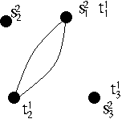

\section{Introductory notes on partition categories}
There are several different ways to define partition categories.
We look at a couple here. One approach (coming from
the partition function/transfer matrix/partition vector
formalism in Statistical Mechanics - see e.g. [M91])
is to think in terms of `gluing graphs together'.
\subsection{Some references}
\subsection{Heuristic definition}
\subsection{Notation for sets and graphs I}
\subsection{Notation for Graphs II}
\subsubsection{Graphs: constructions, conventions and notations}
A graph is loop-free if $f(E) $ contains no singletons.
If $g$ is a specific graph then $V_g$ is the vertex set $V$ of $g$
and $E=E_g$.
(We sometimes write just $g$ for the vertex set.)
$\Gamma_1(S)$ denotes the class of loop-free undirected graphs on vertex set $S$.
$\Gamma_1$ denotes the class of loop-free undirected graphs.
For $g,g'$ graphs, define $g \cup_\gamma g'$ as the graph
with vertex set the union of vertex sets and edge set the
disjoint union of edge sets.
If the vertex set of a graph is not specified
(in a picture of a graph, say) then we take it to be `generic'.
That is, the union of two graphs with unspecified vertex sets would be disjoint.
Exercise:
Consider how one might realise the composition $\cup_\gamma$ on
pictures of graphs.
\subsubsection{Relative graphs}
An $S$-graph
(or a relative graph on set $S$)
is a graph $g$ together with a map
$\lambda_g : S \rightarrow V_g$
(called the structure map of $g$).
$\Gamma(S)$ denotes the class of undirected $S$-graphs.
Notes on relative graphs and compatibility (Click Me)
Note that the structure map $\lambda_g$ is a kind of (possibly partial)
labelling of vertices of $g$ by labels
from $S$. A vertex may have no label, or multiple labels.
But each label only appears on one vertex.
If a vertex has precisely one label in this way then we shall say
that it is properly labeled.
Sometimes we may just write $g$ for the $S$-graph $(g,\lambda_g)$.
Note that any non-trivial graph can be made into an $S$-graph
(for example by mapping all of $S$ to one vertex).
Note that if $(g,\lambda_g)$ is an $S$-graph then so is
$(g \cup_\gamma g' , \lambda_g)$ for any graph $g'$,
since $\lambda_g : S \rightarrow g$ is also a map
$\lambda_g : S \rightarrow g\cup g'$ in an obvious way.
However the union of an $S$-graph and a $T$-graph does not necessarily
define an $S\cup T$-graph, since, if $S,T$ intersect, there may be an
element of the intersection to which the structure maps asign a different
vertex (as if $g,g'$ do not intersect as graphs, for example).
If $g,g'$ make the same asignment to every element in $S \cap T$ we say
they are compatible.
Whenever $g,g'$ are compatible then the graph union extends to define
an $S \cup T$-graph via:
$$
\lambda_{g \cup_\gamma g'} (s) = \left\{
\begin{array}{ccc}
\lambda_g (s) & if \;\; s \in S
\\
\lambda_{g'} (s) & if \;\; s \in T
\end{array}
\right.
$$
Note that our construction makes a distinction between vertices of $g$ and
their structure map labels. However the compatibility condition
on a pair $g,g'$
requires that a vertex with a label from $S \cap T$
is not generic -- the vertex is
effectively identified with one of its labels. The compatibility
condition ensures that $g \cup_\gamma g'$ does not depend on which one.
Exercise: check this.
\begin{proposition}\label{prcompat1}
Let $g \in \Gamma(S)$ and $g' \in \Gamma(T)$.
If both structure maps are injective on $S \cap T$ then we can take $S \cap T$
to be the set of labels for the corresponding set of vertices.
In this way we can consider $g,g'$ to be compatible.
\end{proposition}
---
If $\phi :S \rightarrow T$ is invertible,
and $g \in \Gamma(S)$,
then $\phi (g)$ is the $T$-graph $(g,\kappa_g)$
given by $\kappa_g = \lambda_g \circ \phi^{-1}$.
Example: Suppose that $S= \{ s_1 , s_2 , s_3 \}$ and $T = \{ t_1 , t_2 , t_3 \}$
and $U = \{ u_1 , u_2 \}$. Then an example of a
picture of a
relative graph
$f \in \Gamma(S^1 \cup T^0)$ is:
| $f \; = \;\; $ |
|
$ \in \Gamma(S^1 \cup T^0)$.
$\qquad\qquad$
$\qquad\qquad$
$\qquad\qquad$
In this case | $\;\;\;\; \iota^{\sigma} ( f ) \; = \;\; $
|
|
$ \in \Gamma(S^2 \cup T^1)$.
|
$\Gamma(S,T) $ denotes the subset of $ \Gamma(S^1 \cup T^0)$
of elements whose structure maps are injective on $S^1$ and $T^0$
separately (but not necessarily on the union).
An example of a $g \in \Gamma(S,T)$, and an $h \in \Gamma(T,U)$ is:
| $g \; = \;\; $ |
|
$\in \Gamma(S,T)$; $\qquad$
|
|
$\;\;\;\;$
$h \; = \;\; $ |
|
In such cases we will generally (unlike here) draw the vertices labeled from the
first subset in a row; and similarly for the second subset.
Note that the two rows may (and may necessarily) lie on the same line.
Exercise: compute $ \iota^{\sigma} (g) \cup_\gamma h $ here.
Answer: Firstly $ \iota^{\sigma} (g)$ is :
| $\iota^{\sigma} (g ) \; = \;\; $ |

|
$\in \Gamma(S^2 \cup T^1)$; $\qquad$
|
|
$\;\;$
which can also be drawn, for example, as
$ \; \;\; $ |
|
We see from this
and Prop.\ref{prcompat1}
that $ \iota^{\sigma} (g) $ and $ h $ are compatible.
We have:
| $\iota^{\sigma} (g ) \cup_\gamma h \; = \;\; $ |
|
Another useful convention for drawing relative graphs in case a vertex
has multiple labels is to draw a separate copy of this vertex for each
label, with a `hard link' between.
For example, our $\iota^\sigma( g)$ may be drawn:
| $\iota^\sigma (g ) \; = \;\; $ |
|
; and |
$ h \; = \;\; $ |
|
This allows us to give each label subset its own distinct row.
Suppose further that we draw a label subset in a given order from
left to right (let us say, the natural order, if the set has one).
By a suitable choice of spacing of vertices in the two drawings,
the $\cup_\gamma$ composition is then realised simply
by a concatenation of drawings:
| $\iota^{\sigma} (g ) \cup_\gamma h \; = \;\; $ |
|
The reader will readily verify that this is the same as the original answer,
redrawn using the hard-link convention.
(Of course there are many equivalent such drawings.)
If $(g , \lambda_g )$ an $S$-graph and
$T \subset S$ then $g|_{T}$ denotes the $T$-graph obtained from
$(g,\lambda_g )$ by restricting the map to $T$.
\subsection{Composition of relative graphs}
Define $\circ : \Gamma(S,T) \times \Gamma(T,U) \rightarrow \Gamma(S,U)$
by
\[
g \circ h
= \iota^{\sigma_-} (( \iota^{\sigma} (g) \cup_\gamma h )|_{S^2 \cup U^0} )
\]
Exercise: explain the notation here and check well-definedness!!
Proposition. Let $S_{fin}$ denote the class of finite sets.
Then the triple
$\Gamma
= ( S_{fin} , \Gamma( - , -) , \circ )$ is a category.
Exercise: Explain notation. Prove.
Exercise: Determine a skeleton in $\Gamma$.
Here next.
...